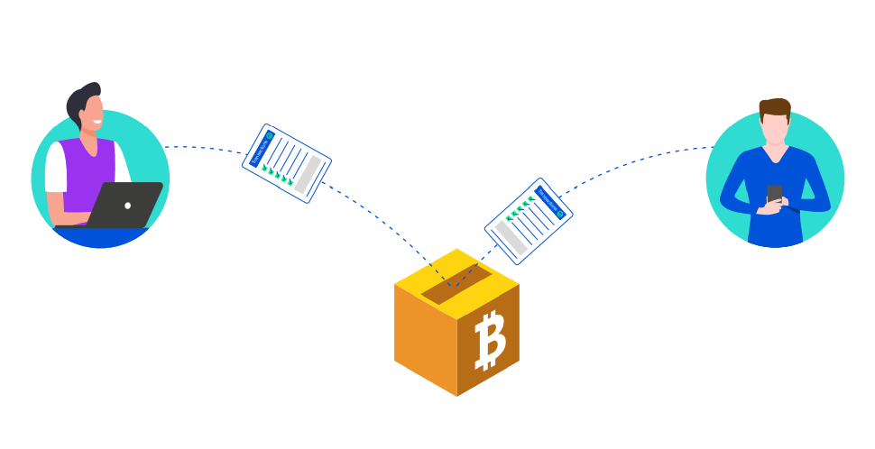
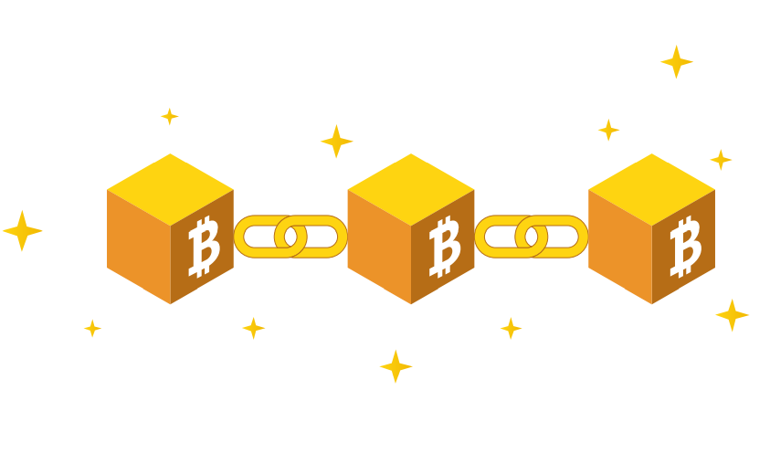

Apa Itu Cryptocurrency?
Cryptocurrency adalah aset digital yang berfungsi sebagai media pertukaran yang menggunakan kriptografi yang kuat untuk mengamankan transaksi keuangan, mengontrol proses pembuatan unit tambahan, dan memverifikasi transfer aset. Crypto terbagi menjadi 2 jenis, yaitu coin dan token. Coin adalah aset digital yang berjalan di blockchainnya sendiri, contohnya Bitcoin yang bekerja di blockchain Bitcoin. Sedangkan token adalah aset digital yang diterbitkan oleh suatu project yang bisa digunakan untuk pembayaran agar bisa menikmati layanan yang disediakan oleh project tersebut.
Cryptocurrency tidak memiliki wujud fisik (seperti uang kertas) dan biasanya tidak dikeluarkan oleh otoritas pusat. Cryptocurrency biasanya menggunakan kontrol terdesentralisasi, bukan mata uang digital bank sentral (CBDC).
Kapan Dan Siapa?
Cryptocurrency pertama, Bitcoin, diciptakan pada tahun 2009 oleh Satoshi Nakamoto, seorang atau sekelompok orang yang identitasnya masih belum diketahui. Sejak saat itu, ribuan cryptocurrency lainnya telah diciptakan, termasuk Bitcoin, Litecoin, dan Ethereum.

Apa Itu Blockchain?
Crypto menggunakan teknologi yang disebut sebagai blockchain. Blockchain sebenarnya adalah database yang tidak dapat diganti atau diubah. Kamu hanya dapat menambahkan data dalam database ini tetapi kamu tidak dapat menghapus atau mengubahnya di masa mendatang Masing-masing tersebut dikelompokkan ke dalam struktur yang disebut “blok”, yang kemudian dihubungkan dengan blok sebelumnya. Blok-blok tersebut terhubung melalui sidik jari digital, yang disebut hash sehingga membuatnya sangat mudah untuk dideteksi jika seseorang mencoba untuk menipu, mengubah atau memodifikasi transaksi sebelumnya. blockchain">Setiap blok terhubung seperti rantai, itulah mengapa sistem database ini disebut blockchain. Blockchain memastikan tidak ada yang dapat memanipulasi riwayat transaksi masa lalu.
Ilustrasi transaksi-transaksi bitcoin yang dikelompokkan dalam satu blok.
Saat seseorang melakukan transaksi cryptocurrency, transaksi tersebut akan dikelompokan ke dalam satu blok. Blok berisi kumpulan transaksi tersebut kemudian divalidasi oleh miner atau penambang dengan cara menyelesaikan teka-teki matematika rumit yang memerlukan daya komputasi besar. Setelah sebuah blok selesai dibuat, komputer-komputer lain dalam jaringan perlu memverifikasi data tersebut (mencapai konsensus) sebelum akhirnya blok baru dimasukkan ke dalam rantai atau blockchain.
Apa Saja Fungsi Cryptocurrency?
Selayaknya mata uang, aset crypto dapat digunakan untuk membeli dan menjual barang. Akan tetapi, di Indonesia, saat ini aset crypto termasuk ke dalam kategori komoditas, sehingga belum dapat dijadikan sebagai alat tukar resmi untuk membeli dan menjual barang.
Aset crypto sebagai komoditas memiliki potensi yang sangat besar sebagai instrumen investasi karena nilainya yang terus bertumbuh seiring meningkatnya jumlah penggunanya. Berikut adalah beberapa contoh fungsi cryptocurrency bagaimana aset digital ini bisa dimanfaatkan.